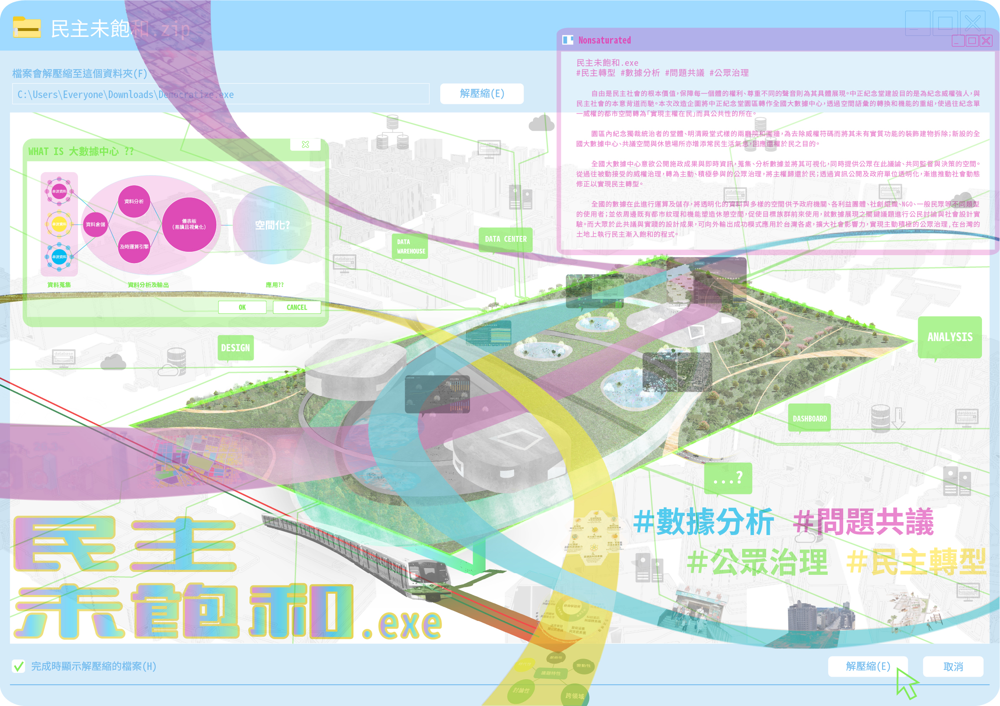
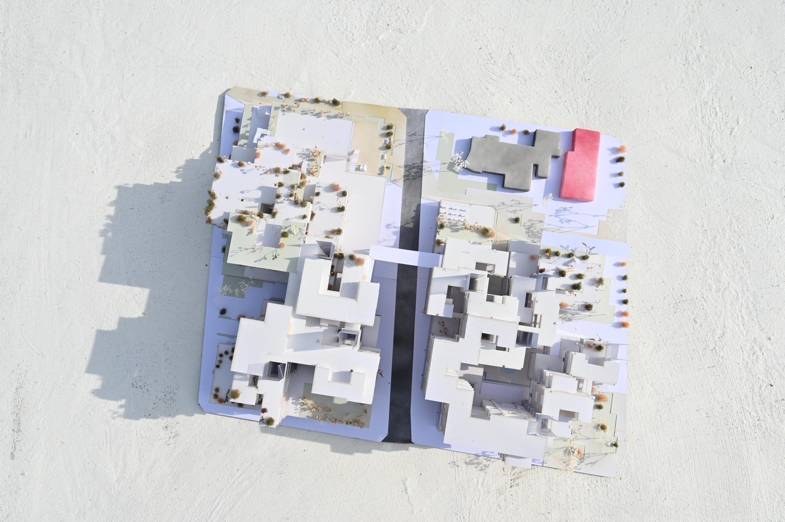
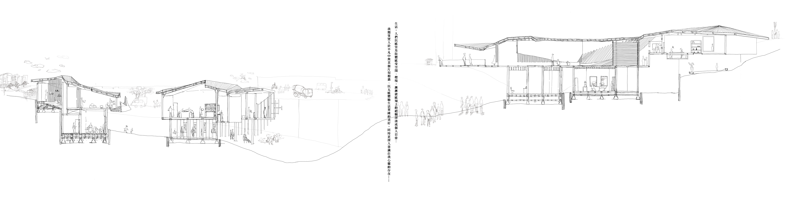
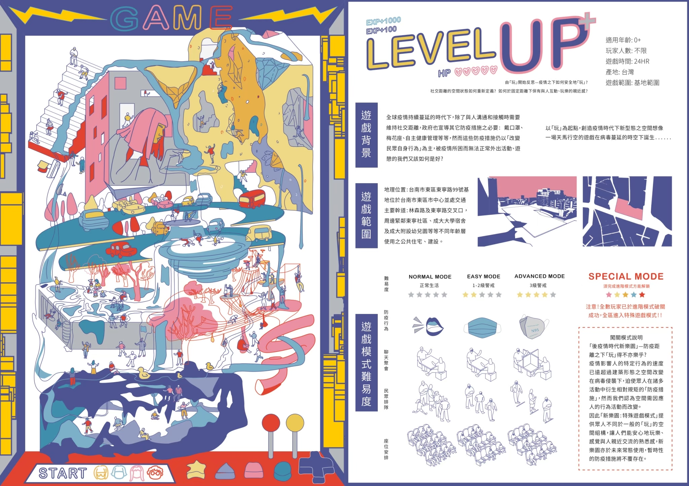
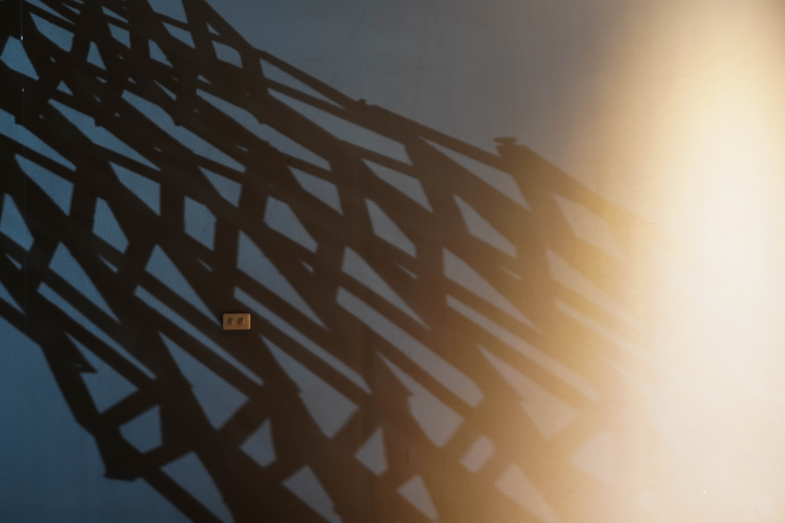
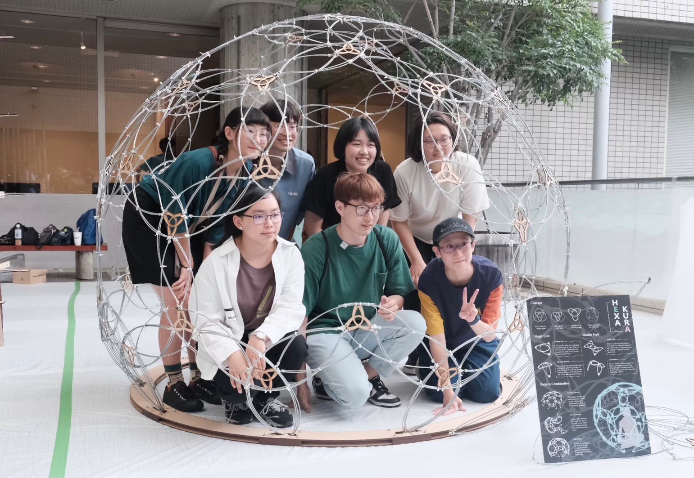
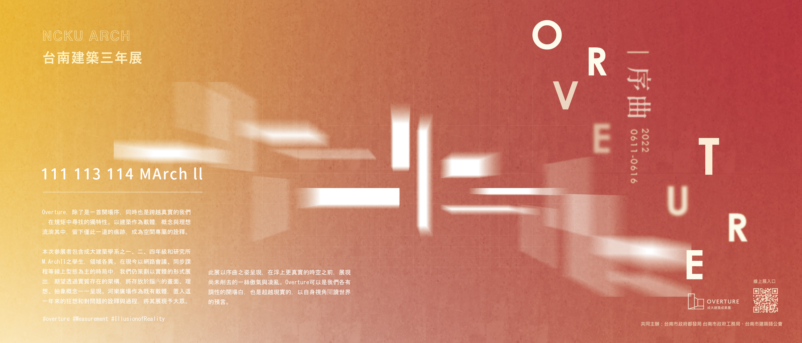

Featured Work01 / 10
Fu Cheng
A public ground for downtown Tainan

Urban Design — Public RealmTainan · 2023–24
Fu Cheng reweaves the fragmented heart of downtown Tainan — the canal, the civic quarter and the commercial grid around Zhongzheng Road — into one continuous public ground. Water-treatment infrastructure is folded underground and a soft, day-and-night landscape returns a shared civic plaza to the old provincial capital.
View Project →Index — Selected Projects

02Nonsaturated Democracy
CKS Memorial Park · Urban Speculation

03Hybrid
Mixed-Use Collective Housing

04Inside Out
Perceptual Space

05Level-Up
Post-Pandemic Play Space

06Membrane
Light & Structure

07Muse
Material Tectonics

08Railway Underground
Urban Research

09Hexa Kura
SSS Workshop · Tokyo

10Overture
Tainan Architectural Triennial · 2022
About / CV
Master's student at the Building & Climate Lab, Department of Architecture, National Cheng Kung University. My work moves between the architecture design and environmental research — the public life of cities, human thermal comfort, and LiDAR analysis of the urban environment.
Education
M.S. Sustainability & Environmental Control, NCKU · 2024–now
Exchange, National University of Singapore · 2023
B.S. Architecture, NCKU · 2020–2024
Exchange, National University of Singapore · 2023
B.S. Architecture, NCKU · 2020–2024
Awards
Silver Award, Asia Young Designer Awards — Glocal Design Solutions · 2024
Outstanding Award, SSS Structural Workshop, Tokyo · 2023
First Prize, CHUR Challenge — Real Estate Management Innovation · 2023
Shortlisted, Heart of the Capital — Chiang Kai-shek Memorial Park · 2022
Distinction Award, New Taipei City Architects Association Student Design Competition · 2022
Outstanding Award, SSS Structural Workshop, Tokyo · 2023
First Prize, CHUR Challenge — Real Estate Management Innovation · 2023
Shortlisted, Heart of the Capital — Chiang Kai-shek Memorial Park · 2022
Distinction Award, New Taipei City Architects Association Student Design Competition · 2022
Exhibitions
19th Venice Architecture Biennale, Taiwan Pavilion · 2024–25
Tainan Architectural Triennial · 2022
Tainan Architectural Triennial · 2022
Skills
Rhino · Grasshopper · Blender · AutoCAD · D5 · Enscape · Adobe CC · QGIS / ArcGIS Pro · Python · LiDAR / Point Cloud
Contact
sunny12345330@gmail.com · (+886) 985 204 657
Sunny Lee — Architecture Portfolio© 2026